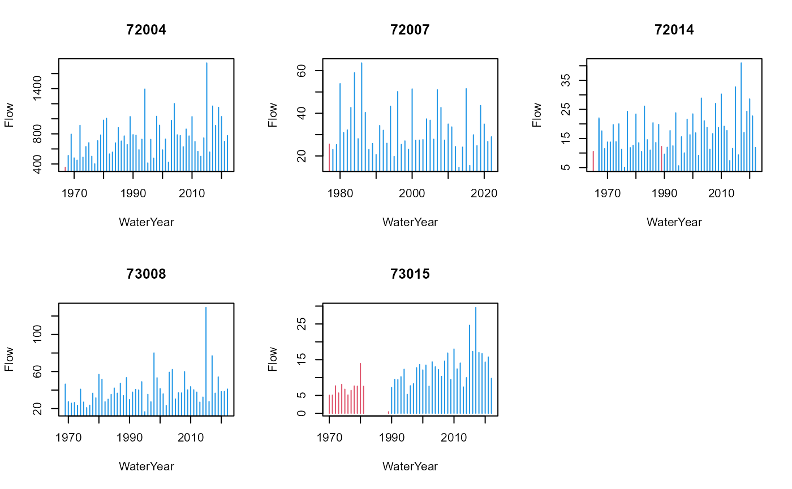

The winfapReader package contains functions to interact
with the information on extremes of instantaneous river flow in the
United Kingdom (UK) made available by the National River Flow Archive (NRFA).
These information underlie most flood risk estimation projects in the
UK, which are typically carried out using the Flood
Estimation Handbook (FEH) statistical method and their updates
as implemented by the software WINFAP.
Consequently, the NRFA publishes and routinely updates files which are
suitable to be read by WINFAP: the collection of these files is referred
to as the peak flow dataset and can be found here. The
winfapReader package allows the user to interact with three different
file-types:
The .AM files which contain the Annual Maximum (AMAX) peaks: these correspond to the largest river flow event in any given water year (which runs from October 1st to September 30th)
The .CD3 files which contain the Catchment Descriptors: these correspond to a set of descriptors for the catchment upstream the gauging station and for the station itself.
The .PT files which contain the peaks over threshold: these correspond to all peaks which are larger than a given threshold. The threshold is fixed by the NRFA and it should be such that there is an average of 3 to 5 peaks over threshold (POT) events per water year. It has often been reported that the POT records in different stations have varying reliability: since most flood frequency estimation methods used in the UK rely on annual maxima the AMAX records go trough a higher scrutiny than then POT records. Users should treat the information about peaks over threshold with caution and thorough quality checks should be performed before analysing them.
The winfapReader package allows you to read into your R
session the .AM, .CD3 and.PT
files. Importantly it is aware of the typical structure of the files in
which rejected annual maxima and missing period of records for the peaks
over threshold are recorded, and merges this information with the flow
records. This allows the user to have all useful information to decide
which parts of the record to include in the analysis.
Recently the NRFA has developed an API
which allows for a programmatic interaction with their datasets: the
information about annual maxima, catchment descriptors and peaks over
threshold can also be retrieved using this API. Beside the information
on extremes for flood frequency estimation the NRFA maintains and
distributes daily river flow records and several other river flow
related variables, such as catchment averaged rainfall: the rnrfa
package allows one to retrieve these information and more with its
rnrfa::gdf and rnrfa::get_ts functions (see
more on this at the end of the vignette). The winfapReader
package focuses only on handling river flow extremes information and has
two sets of functions:
the
read_amax,read_cd3andread_potfunctions read the information from the.AM,.CD3and.PTfiles once these have been downloaded into a local folderthe
get_amax,get_cdandget_potfunctions get the information from the API: these functions therefore only work when an internet connection is available
It is difficult to showcase the use of the read_*
functions since these rely on the location of the WINFAP files within
the users’ working environment. Only the use of the get_*
function will be showcased below. For the annual maxima and peaks over
threshold the two sets of functions give the same output.
library(winfapReader)
### the get_* functions only works once you are connected to the internet
### they also need one to have the library httr installed
### verify if you have the library with (!requireNamespace("httr", quietly = TRUE))
### if FALSE install it with
### install.packages("httr")The get_amaxfunction
The get_amax function allows one to obtain information
on annual maxima from the NRFA. The read_amax function will
produce the same output as the get_amax function but is
based on the locally saved files.
if(curl::has_internet()) amaxEx <- get_amax(c(42003,72014))
names(amaxEx); class(amaxEx)
#> [1] "42003" "72014"
#> [1] "list"
# let's look at only one of these
a42003 <- amaxEx[["42003"]]
## what is the output
head(a42003)
#> Station WaterYear Date Flow Stage Rejected
#> 1 42003 1975 1976-09-30 21:00:00 4.16 -9999 TRUE
#> 2 42003 1976 1977-02-10 21:00:00 13.60 -9999 TRUE
#> 3 42003 1977 1977-12-10 21:00:00 14.90 -9999 TRUE
#> 4 42003 1978 1978-12-10 21:00:00 11.60 -9999 TRUE
#> 5 42003 1979 1979-12-27 21:00:00 9.92 -9999 TRUE
#> 6 42003 1980 1980-10-15 21:00:00 11.30 -9999 TRUEFor each station the function outputs a data.frame with
information on the station number, the water year, the date in which the
highest flow in the water year was recorded, the river flow value and
the river stage value (when available) for all annual maxima recorded at
a station. Moreover it gives the information on whether the NRFA has
deemed the maximum in a given year to be reliable or whether this has
been rejected. The function can query the API for more than one station
at the time: in that case the output is a named list with each element
corresponding to a station id.
The get_potfunction
The get_pot function allows one to obtain information on
peaks over threshold data from the NRFA. The read_pot
function will produce the same output as the get_pot
function but is based on the locally saved files.
if(curl::has_internet()) potEx <- get_pot(c(42003,72014))
names(potEx); class(potEx)
#> [1] "42003" "72014"
#> [1] "list"
# let's look at only one of these
p42003 <- potEx[["42003"]]
## what is the output
class(p42003); names(p42003)
#> [1] "list"
#> [1] "tablePOT" "WaterYearInfo" "dateRange"For each station the function outputs a list with three elements:
-
tablePOT: adata.framewith all the recorded exceedances above the threshold in the NRFA record. In particular information on the exceedance date, water year, peak flow and river stage are given.
head(p42003$tablePOT)
#> Station Date WaterYear Flow Stage
#> 1 42003 1982-10-14 10:30:00 1982 17.0 1.381
#> 2 42003 1982-10-22 13:00:00 1982 19.4 1.486
#> 3 42003 1982-11-24 01:15:00 1982 15.5 1.314
#> 4 42003 1982-12-09 09:30:00 1982 20.2 1.516
#> 5 42003 1985-01-20 16:30:00 1984 23.6 1.656
#> 6 42003 1986-11-21 08:45:00 1986 14.8 1.283
## notice: several events in the 1982 no events in 1983-
WaterYearInfo: adata.framewith information on the percentage of valid record in each water year in the record. The potPercComplete column is derived by calculating the percentage of days which are not included in the POT Gaps or the POT rejected headers in the NRFA .PT files. The column potThreshold gives the information of the flow threshold used to extract the peaks for the station: this is a constant for each station.
head(p42003$WaterYearInfo)
#> WaterYear potPercComplete potThreshold
#> 1 1982 0 14.497
#> 2 1983 0 14.497
#> 3 1984 0 14.497
#> 4 1985 0 14.497
#> 5 1986 0 14.497
#> 6 1987 0 14.497-
dateRangegives the range of dates spanned by the POT record. This range might be wider than the range of the dates in thetablePOTtable since it records the period in which the station was operational and no threshold exceedances occurred.
(p42003$dateRange)
#> [1] "1982-10-13" "2023-09-22"The function has an argument getAmax which defaults to
FALSE. If getAmax = TRUE then information on
the annual maxima is included in the WaterYearInfo
table.
p42003withAmax <- get_pot(42003, getAmax = TRUE)
head(p42003withAmax$WaterYearInfo, 10)
#> Station WaterYear amaxDate amaxFlow amaxStage amaxRejected
#> 1 42003 1975 1976-09-30 21:00:00 4.16 -9999.000 TRUE
#> 2 42003 1976 1977-02-10 21:00:00 13.60 -9999.000 TRUE
#> 3 42003 1977 1977-12-10 21:00:00 14.90 -9999.000 TRUE
#> 4 42003 1978 1978-12-10 21:00:00 11.60 -9999.000 TRUE
#> 5 42003 1979 1979-12-27 21:00:00 9.92 -9999.000 TRUE
#> 6 42003 1980 1980-10-15 21:00:00 11.30 -9999.000 TRUE
#> 7 42003 1981 1981-12-14 06:00:00 8.32 -9999.000 TRUE
#> 8 42003 1982 1982-12-09 09:30:00 20.20 1.516 TRUE
#> 9 42003 1983 1983-12-22 21:45:00 11.70 1.134 TRUE
#> 10 42003 1984 1985-01-20 16:30:00 23.60 1.656 TRUE
#> potPercComplete potThreshold
#> 1 NA NA
#> 2 NA NA
#> 3 NA NA
#> 4 NA NA
#> 5 NA NA
#> 6 NA NA
#> 7 NA NA
#> 8 0 14.497
#> 9 0 14.497
#> 10 0 14.497Notice that in the period when no POT records are available all POT
related information are set to NA. On the other hand, the fact that the
annual maximum in water year 1983 is below the threshold confirms that
the fact that no POT record are present for that water year is related
to low flows throughout the water year rather than a mistake in the POT
record. Notice also that for several of the first years in the record
the annual maxima values are rejected and the proportion of valid POT
records (as shown by potPercComplete) is null: the early
part of the record for this station has been deemed by the NRFA to be
unreliable and any analysis of this flow record should probably discard
the information till water year 1995.
The get_cdfunction
The get_cd function allows the user to obtain
information on the station (for example its location) and on the
catchment upstream the station itself (for example the catchment area
and the annual mean altitude for the catchment). More detail on several
of the catchment descriptors can be found on the NRFA website and in the
FEH. The function gives a slightly different set of information than the
read_cd3 function, due to the difference in information
made available by the NRFA API.
if(curl::has_internet()) cdEx <- get_cd(c(42003,72014))
names(cdEx); class(cdEx)
#> [1] "42003" "72014"
#> [1] "list"
# let's look at only one of these
c42003 <- cdEx[["42003"]]
## what is the output
class(c42003); names(c42003)
#> [1] "data.frame"
#> [1] "id" "river" "location"
#> [4] "easting" "northing" "latitude"
#> [7] "longitude" "feh-pooling" "feh-qmed"
#> [10] "feh-neither" "benchmark" "propwet"
#> [13] "bfihost" "farl" "dpsbar"
#> [16] "sprhost" "rmed-1d" "rmed-2d"
#> [19] "rmed-1h" "ldp" "dplbar"
#> [22] "altbar" "aspbar" "aspvar"
#> [25] "ihdtm-height" "ihdtm-catchment-area" "hydrometric-area"
#> [28] "qmed"The function has an argument fields which governs the
amount of information obtained from the API. If
fields = "feh" (the default) only the basic information
used in the FEH methods is output. If fields="all" a
data.frame with 104 columns is output. This contains several information
about the station and the catchment, including data availability, land
cover information and much more.
if(curl::has_internet()) cd42003all <- get_cd(42003, fields = "all")
names(cd42003all)
#> [1] "id" "name"
#> [3] "catchment-area" "river"
#> [5] "location" "station-level"
#> [7] "measuring-authority-id" "measuring-authority-station-id"
#> [9] "hydrometric-area" "opened"
#> [11] "closed" "station-type"
#> [13] "bankfull-flow" "structurefull-flow"
#> [15] "sensitivity" "nrfa-mean-flow"
#> [17] "nrfa-peak-flow" "feh-pooling"
#> [19] "feh-qmed" "feh-neither"
#> [21] "nhmp" "benchmark"
#> [23] "live-data" "factors-affecting-runoff"
#> [25] "gdf-start-date" "gdf-end-date"
#> [27] "gdf-mean-flow" "gdf-min-flow"
#> [29] "gdf-first-date-of-min" "gdf-last-date-of-min"
#> [31] "gdf-max-flow" "gdf-first-date-of-max"
#> [33] "gdf-last-date-of-max" "gdf-q95-flow"
#> [35] "gdf-q70-flow" "gdf-q50-flow"
#> [37] "gdf-q10-flow" "gdf-q05-flow"
#> [39] "gdf-base-flow-index" "gdf-day-count"
#> [41] "gdf-flow-count" "gdf-percent-complete"
#> [43] "peak-flow-start-date" "peak-flow-end-date"
#> [45] "qmed" "minimum-altitude"
#> [47] "10-percentile-altitude" "50-percentile-altitude"
#> [49] "90-percentile-altitude" "maximum-altitude"
#> [51] "saar-1941-1970" "saar-1961-1990"
#> [53] "lcm2000-woodland" "lcm2000-arable-horticultural"
#> [55] "lcm2000-grassland" "lcm2000-mountain-heath-bog"
#> [57] "lcm2000-urban" "lcm2007-woodland"
#> [59] "lcm2007-arable-horticultural" "lcm2007-grassland"
#> [61] "lcm2007-mountain-heath-bog" "lcm2007-urban"
#> [63] "high-perm-bedrock" "moderate-perm-bedrock"
#> [65] "low-perm-bedrock" "mixed-perm-bedrock"
#> [67] "high-perm-superficial" "low-perm-superficial"
#> [69] "mixed-perm-superficial" "propwet"
#> [71] "bfihost" "farl"
#> [73] "dpsbar" "sprhost"
#> [75] "rmed-1d" "rmed-2d"
#> [77] "rmed-1h" "ldp"
#> [79] "dplbar" "altbar"
#> [81] "aspbar" "aspvar"
#> [83] "ihdtm-height" "ihdtm-catchment-area"
#> [85] "mean-flood-plain-depth" "mean-flood-plain-location"
#> [87] "mean-flood-plain-extent" "urbext-1990"
#> [89] "urbconc-1990" "urbloc-1990"
#> [91] "urbext-2000" "urbconc-2000"
#> [93] "urbloc-2000" "easting"
#> [95] "northing" "latitude"
#> [97] "longitude" "grid-reference.ngr"
#> [99] "grid-reference.easting" "grid-reference.northing"
#> [101] "lat-long.string" "lat-long.latitude"
#> [103] "lat-long.longitude" "peak-flow-rejected-amax-years"Combining the winfapReader and rnrfa
packages
The rnrfa package provides a unique way to query several
types of data from the NRFA. Information about extremes can also be
retrieved using the rnrfa package, although there are some
differences in the output provided when the data of interest are the
peaks over threshold records.
The rnrfa::catalogue function allows one to pull the
list of stations (and related metadata), falling within a given bounding
box. The metadata retrieved by the function are similar to the ones
derived from winfapReader::get_cd. This function can be
used to identify the stations in an area for which peak flow information
can be obtained with winfapReader. The code below for
example identifies stations surrounding the city of Lancaster and then
displays the annual maxima flow with red lines indicating Rejected flow
values. Notice that you would need to have the rnrfa
package installed for the code below to work.
## Lancaster coordinates: 54.04, -2.8
## let's look around the city
rivLanc <- rnrfa::catalogue(bbox = list(lat_min = 54.04-0.2, lat_max = 54.04+0.2,
lon_min = -2.8-0.2, lon_max = -2.8+0.2))
### let's select stations which have been deemed to be suitable for pooling
### that's the highest quality flag for annual maxima
table(rivLanc[,"feh-pooling"]) ### 5 stations are suitable for pooling
#> feh-pooling
#> FALSE TRUE
#> 5 5
rivLanc <- subset(rivLanc,subset = as.vector(rivLanc[,"feh-pooling",drop=TRUE]))
rivLanc[,1:3]
#> # A tibble: 5 × 3
#> id name `catchment-area`
#> <int> <chr> <dbl>
#> 1 72004 Lune at Caton 983
#> 2 72007 Brock at upstream of A6 32
#> 3 72014 Conder at Galgate 28.5
#> 4 73008 Bela at Beetham 131
#> 5 73015 Keer at High Keer Weir 48
### notice that rnrfa outputs a tibble and not a data.frame
idLanc <- rivLanc[,"id",drop=TRUE] ## a vector of ids
amaxLanc <- winfapReader::get_amax(idLanc)
names(amaxLanc)
#> [1] "72004" "72007" "72014" "73008" "73015"Now display the stations all together in a panel.
par(mfrow=c(2,3))
invisible(
sapply(amaxLanc,
function(x) with(x,plot(WaterYear,Flow,
type="h",col=ifelse(Rejected,2,4),
main = unique(Station)))))
The large events which have hit the area in 2015 can be seen in the flow series plots.
The rnrfa package also allows to pull the annual maximum
flow recorded at any station. To also obtain the information about the
water year which the NRFA has deemed to be of poor quality and therefore
rejected set the full_info argument to
TRUE.
par(mfrow=c(1,1))
### the annual maxima for 72014 from rnrfa
maxflow72014 <- rnrfa::get_ts(72014, type = "amax-flow", full_info = TRUE)
### the annual maxima for 72014 from winfapReader
xx <- amaxLanc[["72014"]][,c("Date","Flow","Rejected")]
plot(xx[,"Flow"], maxflow72014[,"amax-flow"],
xlab = "data from winfapReader", ylab = "data from rnrfa"); abline(0,1)
### same information
which(xx$Rejected) ## but two years should be rejected
#> [1] 1 25
which(maxflow72014$rejected == 1) ## same two years
#> [1] 1 25To obtain the POT records in rnrfa use
type = "pot-flow": using the full_info = TRUE
option ensures that a rejected flag is given for the periods in which
the POT records have been found to be unreliable or missing (see the
NRFA website for more details on this). The rejected flag
is built using the same information used to build the
WaterYearInfo table in the
winfapReader::get_pot function. The additional information
provided in WaterYearInfo is useful to identify the years
in which no POT record is found because the records are
missing/unreliable and not because the threshold was never exceeded.
par(mfrow=c(1,1))
# the pot records for 75001 from rnrfa
pot75001 <- rnrfa::get_ts(75001, type = "pot-flow", full_info = TRUE)
pot75001[9:12,]
#> pot-flow rejected
#> 1975-01-27 16.243 0
#> 1975-01-31 18.366 0
#> 1977-02-04 7.939 0
#> 1977-02-07 8.913 0
# using winfapReader
p75001 <- get_pot(75001)
p75001$tablePOT[9:12,]
#> Station Date WaterYear Flow Stage
#> 9 75001 1975-01-27 02:00:00 1974 16.243 0.910
#> 10 75001 1975-01-31 12:00:00 1974 18.366 0.960
#> 11 75001 1977-02-04 04:00:00 1976 7.939 0.676
#> 12 75001 1977-02-07 18:00:00 1976 8.913 0.708
# the same peaks are identified
p75001$WaterYearInfo[1:5,] ### but notice that 1975 had a low proportion missing records
#> WaterYear potPercComplete potThreshold
#> 1 1973 63.28767 6.366
#> 2 1974 98.63014 6.366
#> 3 1975 99.18033 6.366
#> 4 1976 100.00000 6.366
#> 5 1977 97.80822 6.366
# the lack of data in 1975 is due to all flow being lowThe two packages can be used together to retrieve different type of information about river flow: in the example below daily gauged flow for the Conder at Galgate (station 72014) is displayed together with annual maxima (which are extracted from the instantaneous river flow). The latter are typically larger and can be seen to start further in the past than the daily flow data.
### get daily data from NRFA
daily72014 <- rnrfa::get_ts(72014, type = "gdf")
## make daily data into data.frame
daily72014 <- data.frame(Day = zoo::index(daily72014),
DFlow = as.vector(daily72014))
# ensure xx only has date (and no time)
xx$Date <- lubridate::as_date(xx$Date)
plot(xx[,c("Date","Flow")], col = ifelse(xx$Rejected, 2, 4),
pch = 4, ylim =c(0,1.05*max(xx$Flow)))
title(main = "The Conder at Galgate")
points(daily72014, type="l")